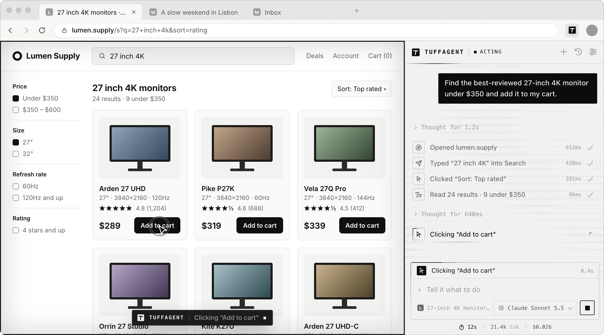
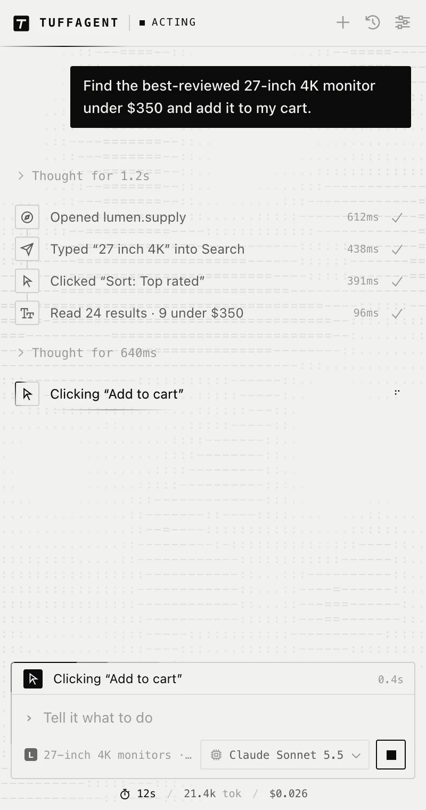
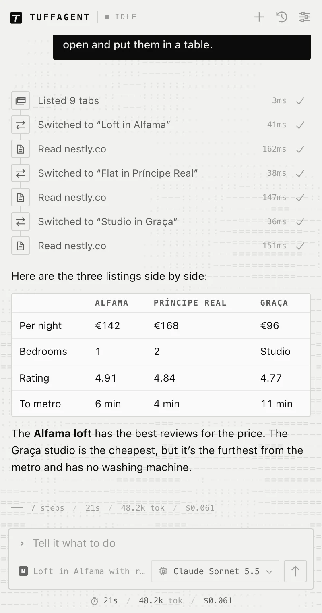
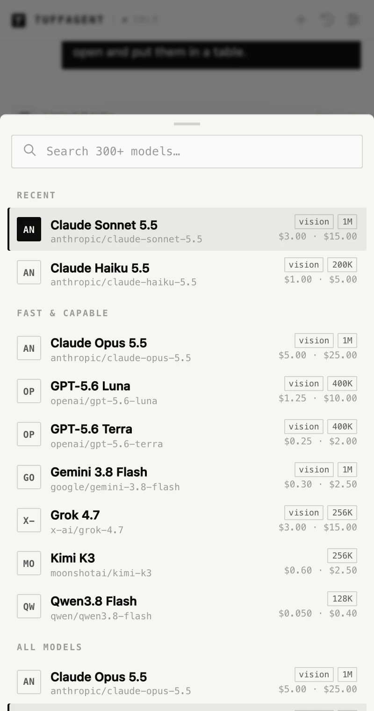
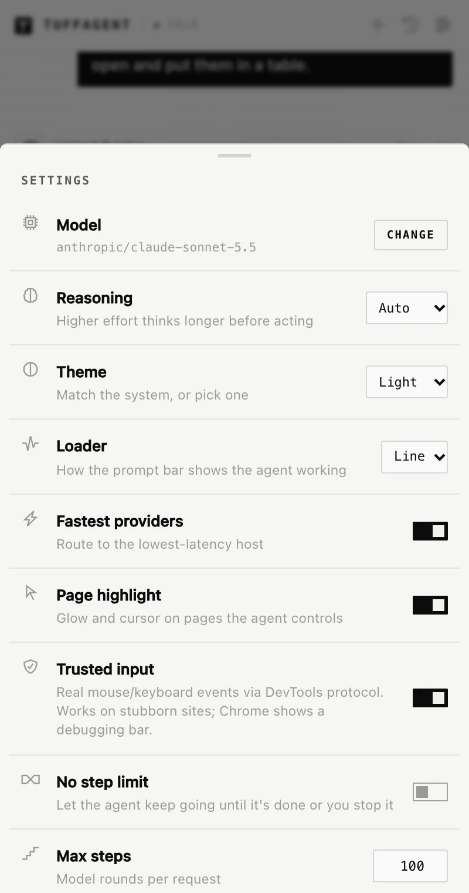

Compare the three apartment listings I have open and put them in a table.
Reads each tab and answers in the sidebar with a table you can copy.
Version 1.6 · Chrome and Firefox
Tell TuffAgent what you need done and it does it in your browser. It reads the page, clicks, types and moves between tabs, using whichever AI model you choose through OpenRouter.
Free to install. You pay OpenRouter directly for the model you use.

Examples
If you can do it on a web page with a mouse and keyboard, you can ask TuffAgent to do it. A few things people hand off:
Compare the three apartment listings I have open and put them in a table.
Reads each tab and answers in the sidebar with a table you can copy.
Find the best-reviewed 27-inch 4K monitor under $350 and add it to my cart.
Searches the store, sorts by rating, reads the results and adds the winner. It stops before checkout.
Group my tabs by topic.
Sorts your open tabs into named tab groups and leaves the odd ones out alone.
Find the article about heat pumps I read last week and bookmark it.
Searches your history, opens the page and saves it to your bookmarks.
Fill in this registration form with the details from my notes tab.
Copies each value across and reads every field back after typing it.
Move every card in the Review column to Done.
Drags each card on the board and checks that it actually moved.
While it works
The sidebar lists what TuffAgent opened, clicked and typed, and how long each step took. On the page itself, a thin frame and a cursor show where it’s working, and a label at the bottom says what it’s doing.

When it’s done
At the end of a task, TuffAgent writes a short summary from what it actually saw, with prices, names, dates and counts as the page showed them. Each run ends with its step count, time, tokens and cost.

Models
TuffAgent connects to OpenRouter, so one key gives you Claude, GPT, Gemini, Grok, Qwen, Kimi and more than 300 other models that support tools. You can switch from the composer whenever you like, even partway through a chat.
Choosing a model
Privacy
There’s no TuffAgent account and no TuffAgent server. Your key, settings and chats are stored in your browser. While a task runs, the page content it needs goes to OpenRouter and the model provider you picked, and nowhere else.
Read the privacy policy
Speed
Most of the time a browser agent spends is waiting: on the model, on the page, on the next step. TuffAgent cuts that down in a few ways.
A tool call starts as soon as its arguments arrive, so the browser is already working while the model writes the next one.
Opening six tabs, or searching history and bookmarks at once, takes about as long as doing one.
After an action it waits for the page to go quiet, usually around 90 ms, instead of sleeping for a fixed time.
Older tool output is trimmed in fixed steps, so earlier messages stay the same and the provider’s prompt cache keeps working.
Site packs
Some apps are hard to work with through clicks alone. On those sites TuffAgent loads tools made for the app. In Google Docs it can write formatted text, set styles, add comments and read the document back to check its work. In Canva it can read a design’s layers and set sizes, colors and positions exactly.
Site packs need Chrome.
See what each pack does
Setup takes a couple of minutes: install the extension, paste an OpenRouter key, and open the sidebar with ⌘ ⇧ Y, or Ctrl Shift Y on Windows and Linux.
Prefer to run it from source? See the manual install steps.